← Index · ← Previous · Next →
Authors: Yuguo Shao, Zishuo Zhao, Song Cheng, Zhengwei Liu
Type: theory · Category: numerical methods · PDF: https://arxiv.org/pdf/2606.00474v1
Analysis basis: full PDF text, analyzed in chunks
Topic relevance: 🔥 methods for driven-dissipative 4/5 · entanglement & information structure 3/5 · correlated / nonlocal dissipation 2/5 · driven-dissipative phase transition 2/5 · non-equilibrium dynamics 1/5 · non-equilibrium universality 1/5
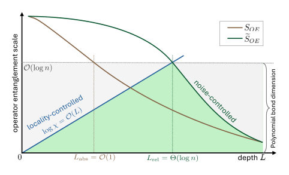
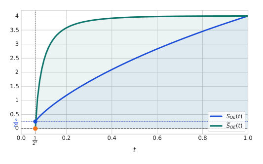
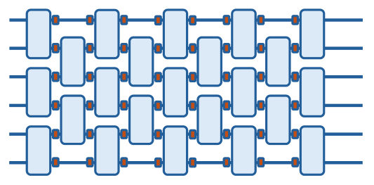
Summary. This paper provides a rigorous theoretical framework to determine the classical simulability of noisy quantum circuits by analyzing the Operator Entanglement Entropy (OEE). It proves that for specific noise types, the required bond dimension for tensor network simulation remains polynomially bounded in system size, establishing a deep link between noise structure and computational complexity.
Why it may be interesting. This work provides concrete, quantitative thresholds (e.g., $c < 1/3$ or $c < 1/48$) that dictate when noisy quantum evolution remains classically simulable via tensor networks, which is crucial for understanding the limits of quantum computation.
Main problem. The paper rigorously analyzes how local noise affects the classical simulability of quantum dynamics, benchmarking this using tensor-network methods.
Main result. It establishes that for certain noise models (like depolarizing noise), the required bond dimension for simulation remains polynomial in system size, even at deep circuit depths, connecting noise characteristics to classical tractability.
Method. The analysis heavily relies on Operator Entanglement Entropy (OEE) as a diagnostic tool, deriving rigorous bounds on the required bond dimension ($\chi$) based on absolute ($\epsilon$) or relative ($\delta$) error tolerances.
Model / system. The system under study is noisy quantum circuits, modeled by sequential application of local gates and single-qubit noise channels (e.g., depolarizing or amplitude damping noise). The simulation framework uses Matrix Product Operators (MPO) and Projected Entangled Pair Operators (PEPO).
Key observables. Operator Entanglement Entropy (SOE and eSOE), required bond dimension ($\chi$), and the contraction coefficient ($c$ or $\eta$).
Important parameters / regimes. Circuit depth ($L$), system size ($n$), error tolerances ($\epsilon, \delta$), and noise parameters (e.g., damping parameter $\gamma$).
Assumptions / limitations. The analysis often assumes specific noise models (e.g., depolarizing noise) or utilizes averaging over random gates (2-design) to achieve the best bounds.
Figures summary. Figures illustrate the scaling of OEE with depth for depolarizing noise, showing plateaus or logarithmic growth depending on the error metric and noise type.
Paper structure. The paper builds from defining the OEE measures (SOE vs eSOE) and their relationship, to applying these measures to analyze the effect of noise on the required bond dimension for simulating 1D and higher-dimensional circuits.
We aim to rigorously address how local noise affects classical simulability of quantum dynamics benchmarked by tensor-network methods. Using operator entanglement entropy (OEE), we prove the following: (1) For single-qubit depolarizing noise on arbitrary circuits, tensor networks with $\mathrm{poly}(n)$ bond dimension suffice for fixed absolute Hilbert-Schmidt error after $\order{1}$ depth, while relative error demands $\order{\log n}$ depth; and this bound is optimal. (2) For single-qubit depolarizing noise on 1D local circuits, the existence of whole-trajectory error-bounded matrix product operator (MPO) of $\mathrm{poly}(n)$ bond dimension at all depths. (3) For general single-qubit noise in 1D brickwall circuits, random two-design gates with contraction coefficient $c<1/3$ yield an $\order{1}$ OEE plateau with probability $1-Te^{-Ω(n)}$, while arbitrary gates with $c<1/48$ give $\order{\log n}$ OEE in the worst case. (4) In higher dimensions, these bounds yield uniform-in-depth $\mathrm{poly}(n)$ average boundary-bond dimensions for projected entangled pair operators~(PEPO) across every cut -- under depolarizing noise at either absolute or relative accuracy, and under general noise with strong contraction at absolute accuracy. Our results establish a rigorous connection between certain noise models, circuit types, and their classical simulability.
Authors: Yun-Ru Fan, Bo-Wen Chen, Dan Xu, Cheng-Li Wang, Hong Zeng, Jia-Qi Wang, Xu-Qiang Wang, Jia-Chen Cai, Hai-Zhi Song, Hao Li, Li-Xing You, Yan-Yu Wei, Kai Guo, Xin Ou, Guang-Can Guo, Qiang Zhou
Type: experiment · Category: quantum information and computing · PDF: https://arxiv.org/pdf/2606.01657v1
Analysis basis: full PDF text, analyzed in chunks
Topic relevance: 🔥 quantum optics experiment 4/5 · QC/QI experiment 3/5 · interference shaping light 3/5 · correlated cavity matter 2/5 · entanglement & information structure 1/5
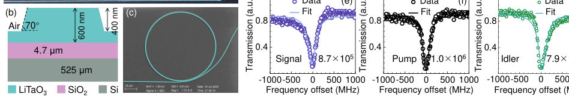
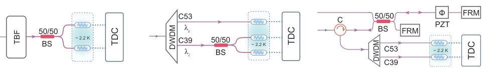
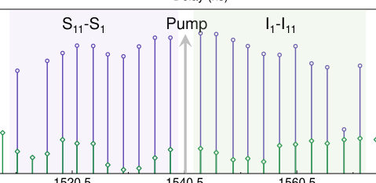
Summary. The research demonstrates the first quantum light source using Thin-film Lithium Tantalate (TFLT) via spontaneous four-wave mixing in a microring resonator. The source exhibits strong antibunching and high-visibility energy-time entanglement, proving TFLT's viability as a manufacturing-compatible platform for integrated quantum photonic circuits.
Why it may be interesting. This work directly addresses the hardware requirements for quantum information processing by demonstrating a scalable, integrated source of entangled photons using a promising material platform (TFLT).
Main problem. To demonstrate a quantum light source using Thin-film Lithium Tantalate (TFLT) for scalable photonic quantum circuits, bridging the gap between classical TFLT and integrated quantum photonics.
Main result. The authors successfully demonstrated the first quantum light source with TFLT via spontaneous four-wave mixing, generating strongly antibunched heralded single photons and confirming energy-time entanglement.
Method. The experiment utilized a TFLT microring resonator (MRR) pumped by a telecom-wavelength laser to generate correlated photon pairs via SFWM, followed by detailed quantum characterization.
Model / system. The physical system is a TFLT microring resonator integrated photonics platform. The quantum process relies on spontaneous four-wave mixing (SFWM) within the high-Q cavity to generate entangled photon pairs.
Key observables. Heralded second-order autocorrelation $g^{(2)}_H(0) = 0.071 \pm 0.004$, unheralded $g^{(2)}(0) = 1.93 \pm 0.05$, and two-photon interference visibility of $92.55 \pm 0.94\%$.
Important parameters / regimes. Photon pair generation rate of $24 ext{ MHz}/ ext{mW}^2$; cavity quality factor $Q \sim 10^6$; operating band 1510 to 1570 nm.
Assumptions / limitations. The work establishes TFLT as a manufacturing-compatible platform, implying future monolithic co-integration is feasible.
Figures summary. Figures illustrate the device design, transmission spectra, and experimental setups for measuring correlation properties, including coincidence histograms and $g^{(2)}$ measurements.
Paper structure. The paper details the TFLT platform characterization, the experimental setup for correlated photon generation, and the measurement and analysis of quantum statistics (antibunching and entanglement visibility).
Thin-film lithium tantalate (TFLT) has emerged as a promising integrated photonic platform owing to its low photorefractive noise, high optical damage threshold, and reduced birefringence, attracting increasing interest for scalable photonic technologies. Here, to the best of our knowledge, we demonstrate the first quantum light source with TFLT via spontaneous four-wave mixing, bridging the gap between the rapidly advancing classical TFLT ecosystem and integrated quantum photonics. The fabricated microring exhibits a free spectral range of 350~GHz and an optical quality factor of $10^6$, enabling efficient cavity-enhanced nonlinear interactions. Correlated photon pairs are generated across the telecom band from 1510 to 1570~nm, with a photon pair generation rate of 24 $\mathrm{MHz/mW^{2}}$ at a wavelength of 1535.04 nm. The source delivers strongly antibunched heralded single photons with $g^{(2)}_{H}(0)=0.071\pm0.004$ at a heralding rate of 170 kHz, while the unheralded statistics yield $g^{(2)}(0)=1.93 \pm 0.05$, indicating near-single-temporal-mode emission. Energy-time entanglement is further confirmed by a raw two-photon interference visibility of $92.55\pm0.94\%$, well above the Bell-inequality violation threshold. These results establish TFLT as a manufacturing-compatible platform for scalable photonic quantum circuits, paving the way for the monolithic co-integration of classical and quantum photonic functionalities.
Authors: Guoding Liu, Chushi Qin, Zitai Xu, Xiongfeng Ma, Zi-Wen Liu
Type: theory · Category: quantum information and computing · PDF: https://arxiv.org/pdf/2606.02122v1
Analysis basis: full PDF text, analyzed in chunks
Topic relevance: 🔥 measurement-induced transitions 4/5 · entanglement & information structure 3/5 · quantum measurements 2/5 · Keldysh / 2PI / non-Gaussian methods 1/5 · correlated / nonlocal dissipation 1/5 · driven-dissipative phase transition 1/5
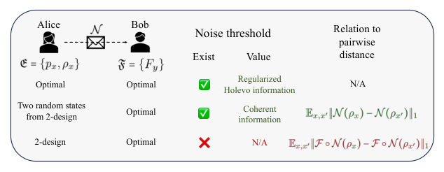
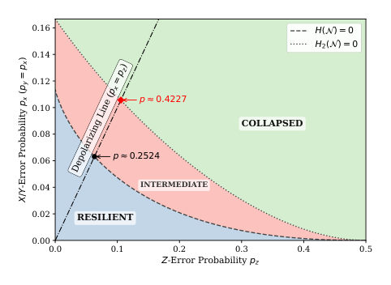
Summary. This work analyzes how quantum state distinguishability degrades under noise for scrambled quantum ensembles modeled by 2-designs. It establishes a critical phase transition, showing that while unmeasured states can maintain high distinguishability in a resilient regime, post-measurement fundamentally destroys this protection. This has major implications for quantum communication and learning tasks.
Why it may be interesting. The sharp distinction between unmeasured and post-measured distinguishability provides fundamental insights into the limits of quantum information processing, suggesting that measurement itself can destroy noise resilience.
Main problem. The paper investigates whether quantum state distinguishability, for ensembles modeled by 2-designs, can be protected from noise, addressing the competition between noise and information scrambling.
Main result. Unmeasured 2-design ensembles exhibit a sharp phase transition, retaining high distinguishability in a resilient phase, but post-measured ensembles lose all noise protection, collapsing exponentially.
Method. The authors use rigorous decoupling approaches and information-theoretic bounds (like average pairwise trace distance) to characterize distinguishability under noise channels.
Model / system. The system involves quantum state ensembles, specifically those modeled by 2-designs, evolving under general quantum noise channels (CPTP maps). The analysis compares distinguishability for unmeasured versus post-measured states.
Key observables. Average pairwise trace distance, mutual information $I(X:Y)$, and channel conditional entropies ($H(N), H_2(N)$).
Important parameters / regimes. Noise strength relative to entropic thresholds ($H(N)=0$ and $H_2(N)=0$), and the number of qubits $n$.
Assumptions / limitations. The analysis heavily relies on the 2-design model to characterize 'minimally' scrambled ensembles, and comparisons are drawn between unmeasured and post-measured scenarios.
Figures summary. Figures illustrate phase diagrams partitioning the noise space into RESILIENT, INTERMEDIATE, and COLLAPSED regions based on entropic thresholds, and compare information-theoretic measures across different encoding strategies.
Paper structure. The paper builds by first defining distinguishability for ensembles, then deriving bounds using decoupling methods, establishing the phase transitions for unmeasured states, and finally contrasting these results with the complete loss of protection observed in post-measured states.
Quantum state distinguishability is a fundamental concept in quantum information science that underpins a wide range of important practical tasks. Traditionally formulated for pairs of states, quantum state distinguishability is here extended to quantum state ensembles, which we characterize through the average pairwise trace distance. Motivated by both theoretical and practical interest in noisy quantum information processing, we ask whether ``minimally'' scrambled ensembles modeled by 2-designs protect distinguishability under noise, which sheds light on the fundamental competition between noise and information scrambling. Using a rigorous decoupling approach, we establish tight bounds on noisy ensemble distinguishability. We show that the distinguishability of noisy 2-design ensembles exhibits a sharp threshold and phase-transition behavior governed by channel conditional entropy: below the threshold, the states remain mutually distinguishable with high probability, while above it, distinguishability undergoes a sudden power-law decay and then collapses exponentially. On the other hand, under local purity-shrinking noise, post-measured noisy 2-design ensembles become exponentially indistinguishable for any measurement, precluding a noise threshold for learning tasks such as shadow tomography. These results reveal a sharp difference between unmeasured and post-measured scrambled ensembles: the former can retain high distinguishability for sufficiently small noise, whereas the latter exhibits no such protected regime. We discuss the implications of these results for crucial tasks ranging from quantum communication and cryptography to learning.
Authors: Qing-Yuan Zuo, Shuo Geng, Shan-Wen Tsai, Jin Zhang
Type: theory · Category: other · PDF: https://arxiv.org/pdf/2606.01116v1
Analysis basis: full PDF text, analyzed in chunks
Topic relevance: 🔥 Rydberg arrays 4/5 · 🔥 analog quantum simulation 4/5 · entanglement & information structure 3/5 · exotic spin models in light-matter 1/5
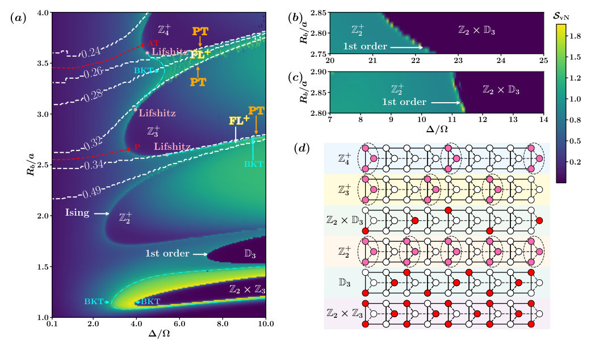
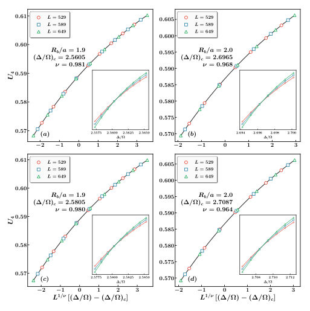
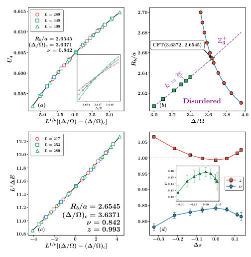
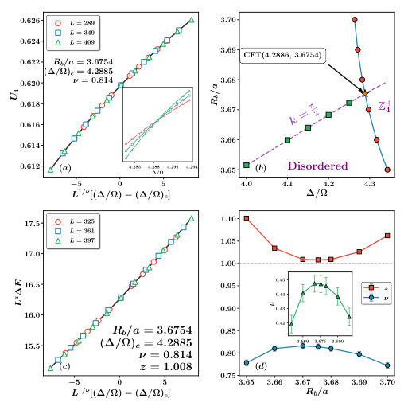
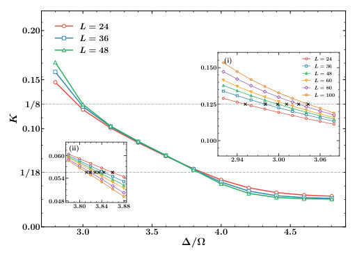
Summary. This paper uses DMRG to map the complex ground-state phase diagram of Rydberg atoms in a triangular-prism array. It reveals multiple density-wave phases characterized by spontaneous symmetry breaking, with transitions governed by distinct critical phenomena like BKT transitions and Ising/Potts universality classes. The study highlights how the geometry dictates the richness of the quantum phases accessible in these ultracold atomic systems.
Why it may be interesting. This work provides a detailed theoretical map of quantum phases in a highly tunable, geometrically constrained quantum simulator platform, linking specific symmetries ($D_3$) to complex critical behavior.
Main problem. The study maps the ground-state phase diagram of Rydberg atoms confined in a triangular-prism optical tweezer array.
Main result. The system exhibits a rich variety of ordered phases, including density-wave states characterized by different symmetries ($Z_2 imes D_3$, $Z_p$), and transitions between these phases are governed by various critical phenomena like BKT transitions and Ising/Potts universality classes.
Method. The Density Matrix Renormalization Group (DMRG) algorithm is employed, supplemented by diagnostics like Von Neumann entanglement entropy and finite-size scaling analysis of correlation functions.
Model / system. The system consists of Rydberg atoms in a triangular-prism lattice, modeled by a Hamiltonian incorporating Rabi coupling, detuning, and long-range Rydberg blockade interactions ($V_{r,r'}$).
Key observables. Von Neumann entanglement entropy ($S_{vN}$), connected density-density correlation function ($C(r)$), and order parameters ($\hat{M}_p$).
Important parameters / regimes. Detuning-to-Rabi-frequency ratio ($\Delta/\Omega$) and the Rydberg blockade radius ($R_b/a$).
Assumptions / limitations. The analysis often relies on projecting the Hilbert space to an effective Hamiltonian, particularly in the large blockade radius limit.
Figures summary. Figures illustrate the phase diagram in the $\Delta/\Omega - R_b/a$ plane, showing lobes corresponding to different crystalline orders, and plots of $S_{vN}$ and $C(r)$ used to locate critical points and crossovers.
Paper structure. The paper systematically explores the phase diagram by varying key parameters, analyzing transitions between different symmetry-broken phases ($Z_2 imes Z_3 o ext{Disordered}$ via BKT, $D_3 o ext{Disordered}$ via first-order), and characterizing crossovers using entanglement entropy.
We study the ground-state phase diagram of Rydberg atoms in a triangular-prism optical tweezer array using the density matrix renormalization group. By tuning the detuning-to-Rabi-frequency ratio and the Rydberg blockade radius, the system realizes several density-wave phases with spontaneous breaking of translational and leg-exchange symmetries. Unlike two-leg Rydberg ladders with $\mathbb{Z}_2$ leg-exchange symmetry, the triangular prism has $\mathbb{D}_3$ symmetry, leading to a richer set of ordered phases and transitions. For blockade radius moderately larger than the lattice spacing, a phase with alternating double and single Rydberg occupancy appears at large detuning. It breaks $\mathbb{Z}_2$ translational and $\mathbb{Z}_3$ rotational symmetry while preserving a rung reflection symmetry. Upon decreasing detuning, it melts through two Berezinskii-Kosterlitz-Thouless transitions with an intermediate critical phase described by a $\mathbb{Z}_6$ clock model. At larger blockade radius, a phase with one Rydberg excitation per triangle and broken $\mathbb{D}_3$ symmetry appears through a first-order transition. When double occupation of neighboring triangles is suppressed, rung-trimerized density waves develop as detuning increases from the disordered phase. Their melting follows the same structure as in Rydberg chains and two-leg ladders: the $\mathbb{Z}_2$ case has Ising critical lines, while the $\mathbb{Z}_3$ and $\mathbb{Z}_4$ cases have chiral critical lines, with Potts and Ashkin-Teller points only on the corresponding commensurate lines. Inside the $\mathbb{Z}_2$ rung-trimerized phase, an entanglement-entropy peak signals a crossover regime with enhanced period-2 density modulation before a first-order transition into a $\mathbb{Z}_2\times\mathbb{D}_3$ phase. Floating phases with incommensurate quasi-long-range order appear between trimerized states of different periods.
Authors: Leonardo Badurina, Kathryn M. Zurek
Type: theory · Category: other · PDF: https://arxiv.org/pdf/2606.00237v1
Analysis basis: full PDF text, analyzed in chunks
Topic relevance: 🔥 Keldysh / 2PI / non-Gaussian methods 4/5 · analog quantum simulation 2/5 · methods for driven-dissipative 2/5 · correlated / nonlocal dissipation 1/5 · driven-dissipative phase transition 1/5 · interference shaping light 1/5 · non-equilibrium dynamics 1/5
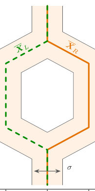
Summary. This paper establishes an open effective field theory framework to analyze how Matter-Wave Interferometers can detect Dark Matter by measuring phase shifts and decoherence. Using the Schwinger-Keldysh formalism, the authors show that the two observables respond differently to DM statistics, providing a powerful diagnostic tool for future quantum sensing experiments.
Why it may be interesting. This work directly applies advanced open quantum system techniques (SK formalism) to a physical platform (MWIs) relevant to AMO physics, providing quantitative predictions for environmental coupling effects.
Main problem. To develop a theoretical framework for detecting Dark Matter (DM) using Matter-Wave Interferometers (MWIs) by analyzing phase shifts and decoherence induced by the DM environment.
Main result. The formalism reveals a structural asymmetry: decoherence inherits novel quantum statistical factors (Bose enhancement/Pauli blocking), while the phase shift is at most linear in the DM occupation number.
Method. The problem is treated as an open quantum system, utilizing the Schwinger-Keldysh formalism to construct an effective field theory and calculate the reduced density matrix via an influence functional.
Model / system. The system is an MWI (using atoms or mesoscopic objects) coupled to a background DM environment. The interaction is modeled via an effective Lagrangian describing monopole-monopole coupling.
Key observables. Phase shift and decoherence (contrast loss) of the matter wave.
Important parameters / regimes. DM mass, DM occupation number ($n_\chi$), coupling constant ($g$), and the ratio of interferometer time ($T$) to environment correlation time ($ au_c$).
Assumptions / limitations. The DM halo is assumed to be stationary, homogeneous, and virialized, and the DM state is Gaussian.
Figures summary. Figure 1 illustrates the spacetime diagram for the MWI sequence, showing the unperturbed classical worldlines for the two arms.
Paper structure. The paper systematically derives the reduced density matrix using the path integral approach, expanding in powers of worldline fluctuations, and deriving the influence action to separate the phase and decoherence contributions.
Matter-wave interferometers (MWIs) offer a uniquely quantum route to dark matter (DM) detection: DM can reveal itself through phase and decoherence between spatially separated wavepackets, even when negligible energy deposition or resolvable recoil occurs. We formulate these effects in an open effective field theory for MWIs using the Schwinger-Keldysh formalism, which highlights a structural asymmetry between the two detection channels. For elastic spin-independent DM scattering, decoherence inherits novel Bose enhancement or Pauli blocking factors, while the phase is at most linear in the DM occupation number. By retaining the DM's coherence time, this framework spans Markovian and non-Markovian dynamics across a wide range of DM masses, and systematically organizes corrections beyond the heavy-probe limit.
Authors: Changhao Xu, Alexander Heidt, Mohammadreza Nematollahi, Christoph Lotz, Ernst Maria Rasel, Yan Liu, Wei Ji, Dmitry Budker
Type: experiment · Category: other · PDF: https://arxiv.org/pdf/2606.01056v1
Analysis basis: full PDF text, analyzed in chunks
Topic relevance: 🔥 quantum measurements 4/5 · spintronics-quantum-optics interface 3/5 · exotic spin models in light-matter 1/5 · measurement-induced transitions 1/5 · methods for driven-dissipative 1/5 · non-equilibrium dynamics 1/5
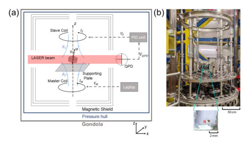
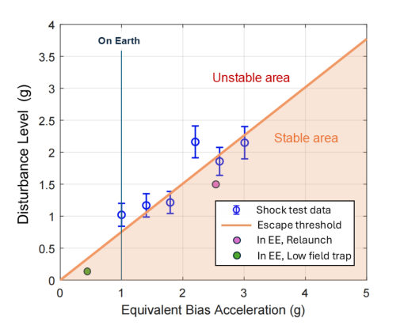
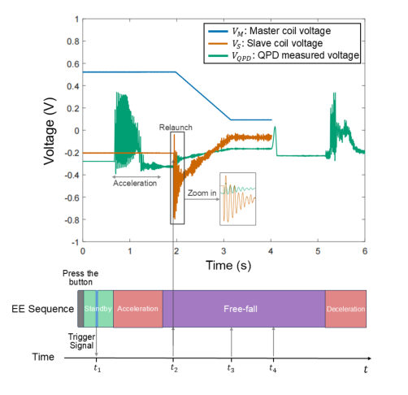
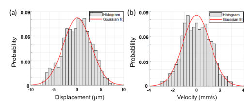
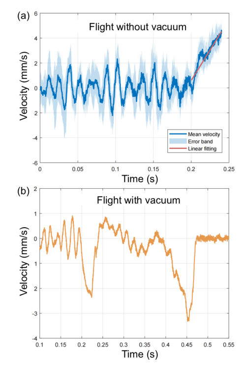
Summary. This paper presents the development and experimental testing of a novel Master Proportional-Integral-Differential Magnetic Trap (MPIDMT) designed to trap ferromagnetic particles in near-free-fall conditions. By using a master bias coil, the trap overcomes the inherent instability of conventional systems in microgravity. The successful demonstration allows for precise measurement of magnet dynamics, moving closer to observing fundamental phenomena like macroscopic Larmor precession in space.
Why it may be interesting. The work directly addresses the control and measurement of magnetic dynamics in near-zero gravity, which is crucial for quantum sensing applications involving magnetic moments, linking classical control theory to fundamental quantum physics measurements.
Main problem. The primary goal is to observe pure Larmor precession of a macroscopic ferromagnetic particle in true free fall, which requires overcoming systematic errors from magnetic traps.
Main result. The authors successfully demonstrated stable levitation and controlled motion of the magnet in the microgravity phase of a drop tower, achieving stable trapping down to a low bias field of 0.4 g.
Method. They developed and tested a novel Master Proportional-Integral-Differential Magnetic Trap (MPIDMT) system, combining PID control with a master bias coil.
Model / system. The system uses a PID-controlled slave coil system biased by a master coil to maintain stable levitation. The experiment is performed on the Einstein-Elevator drop tower, allowing testing across various gravity regimes, including near-free fall.
Key observables. Position and velocity distributions of the magnet during low-field trapping and free-fall periods.
Important parameters / regimes. Stable operation against shock accelerations up to 1.5 g; stable trapping demonstrated at a low bias field of 0.4 g.
Assumptions / limitations. The PID model is a first-order linearized approximation, and the quality of free fall is limited by residual acceleration from the drop tower platform.
Figures summary. Figures illustrate the experimental setup in the Einstein-Elevator, the control scheme using a QPD, and velocity profiles showing residual motion after current cutoff in both ambient and vacuum conditions.
Paper structure. The paper introduces the physical challenge (Larmor precession in free fall), proposes the MPIDMT solution, details the experimental implementation and stability analysis using the drop tower, and presents results showing stable operation and controlled release.
Ferromagnets in free space are predicted to exhibit pure Larmor precession at near-zero magnetic fields and provide exceptional sensitivity for magnetometry and gyroscopy. Notably, pure Larmor precession has not been observed in a macroscopic ferromagnetic particle, despite its fundamental importance and potential for probing relativistic effects and dark-matter interactions. Realizing such dynamics requires true free fall to eliminate clamping losses and trap-induced systematics. A central challenge is designing a tunable trap that is weak enough to permit near-free evolution yet robust enough to withstand the disturbances of launch and release. Here, we propose and demonstrate a novel master proportional-integral-differential magnetic trap (MPIDMT) combining a PID-controlled coil system with a master control coil system. Implemented in the third-generation drop tower - Einstein-Elevator, during the microgravity phase the system stably levitates a ferromagnetic particle against shock accelerations up to 1.5 g and resolves its motion in both a low-field (0.4 g) configuration and in pure free fall. These results represent a key step toward free-fall ferromagnetic magnetometry, the long-sought direct observation of macroscopic Larmor precession, and future space-based experiments.
Authors: Abhik Kumar Saha, Tanay Pathak, Masaki Tezuka
Type: theory · Category: disordered systems and neural networks · PDF: https://arxiv.org/pdf/2606.02207v1
Analysis basis: full PDF text, analyzed in chunks
Topic relevance: 🔥 entanglement & information structure 4/5 · non-equilibrium dynamics 3/5 · non-equilibrium universality 2/5 · analog quantum simulation 1/5 · scars & prethermalization 1/5
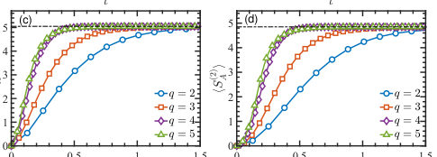
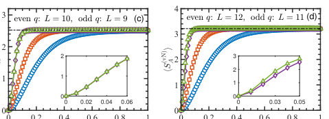
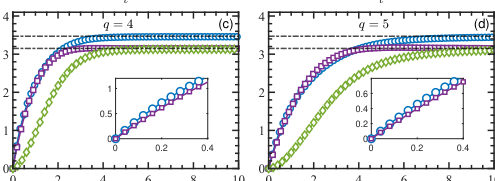
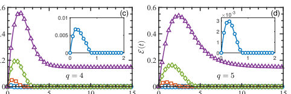
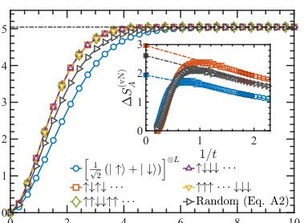
Summary. This work analyzes information scrambling in the all-to-all interacting spin SYK-q model using advanced entanglement measures. It demonstrates that entanglement grows rapidly towards a random limit, confirming efficient quantum chaos. The research provides a detailed comparison of how different interaction orders and initial states affect this scrambling process.
Why it may be interesting. The study provides a generic framework for understanding how information spreads in complex, highly interacting quantum systems, drawing parallels between quantum chaos, thermalization, and concepts from quantum gravity (like black hole scrambling).
Main problem. The paper investigates information scrambling and thermalization dynamics in highly interacting, all-to-all coupled quantum many-body systems.
Main result. Entanglement measures show rapid growth followed by saturation near Haar-random values, confirming efficient scrambling. The scrambling rate exhibits a non-trivial dependence on the interaction order and system size.
Method. The study employs numerical simulations to calculate various entanglement measures (von-Neumann, Rényi entropies, entanglement negativity) for the spin Sachdev-Ye-Kitaev (SYK)-q model.
Model / system. The primary model is the all-to-all interacting spin Sachdev-Ye-Kitaev (SYK)-q model, characterized by a Hamiltonian involving multi-body spin interactions. The analysis compares dynamics across different interaction orders ($q$) and initial quantum states.
Key observables. Von-Neumann and Rényi entropies, entanglement negativity, mutual information, and the scrambling rate.
Important parameters / regimes. Interaction order ($q$), system size ($L$), and the choice of initial quantum state (e.g., random, superposition, Néel state).
Assumptions / limitations. The analysis often compares results to the theoretical Haar-random limit and sometimes restricts calculations to specific parity sectors.
Figures summary. Figures illustrate the time evolution of entanglement measures for various $q$ and initial states, showing initial growth and eventual saturation towards random values. Comparisons are made between different entanglement measures and time scales.
Paper structure. The paper systematically analyzes entanglement dynamics by first establishing the general behavior in the SYK-q model, then comparing different entanglement measures (pure vs. mixed state), and finally investigating the dependence of scrambling on the initial quantum state and the interaction order $q$.
Information scrambling is a hallmark of quantum chaos and thermalization in isolated quantum many-body systems. We investigate scrambling dynamics in the all-to-all interacting spin Sachdev-Ye-Kitaev (SYK)-$q$ model using both pure- and mixed-state entanglement measures. We show that von-Neumann and Rényi entropies exhibit rapid growth followed by saturation near Haar-random values, signaling efficient scrambling. The scrambling rate reveals a nontrivial dependence on the interaction order, system size, and Hamiltonian scaling. We further employ mixed-state entanglement as a powerful probe of information scrambling. We numerically find a universal relation between the Rényi-1/2 mutual information and entanglement negativity for minimal interaction order in the early growth regime. Furthermore, entanglement negativity displays a Page-curve-like behavior under unequal subsystem partitioning, characterized by the birth, spread, and eventual death of quantum correlations. Our results provide a generic description of information scrambling using entanglement dynamics in all-to-all interacting spin systems with multi-body interactions.
Authors: Roman Goncharov, N. G. Veselkova, Alexei D. Kiselev
Type: theory · Category: quantum information and computing · PDF: https://arxiv.org/pdf/2606.02201v1
Analysis basis: full PDF text, analyzed in chunks
Topic relevance: 🔥 measurement-induced transitions 4/5 · 🔥 quantum measurements 4/5 · Keldysh / 2PI / non-Gaussian methods 1/5 · entanglement & information structure 1/5 · methods for driven-dissipative 1/5
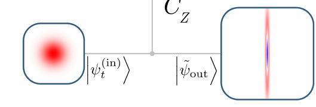
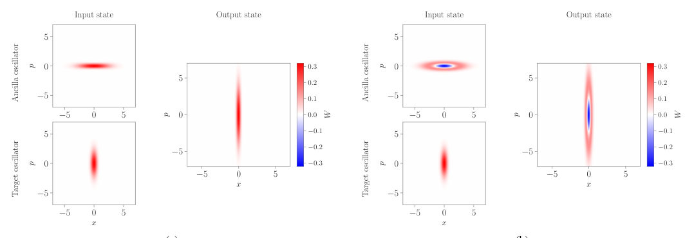
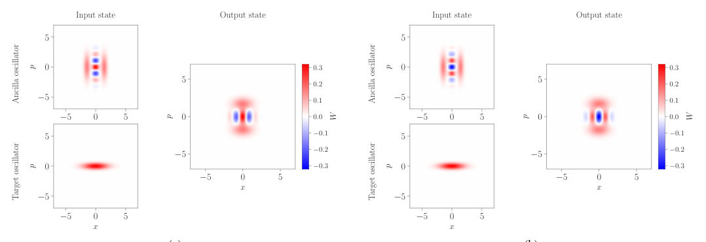
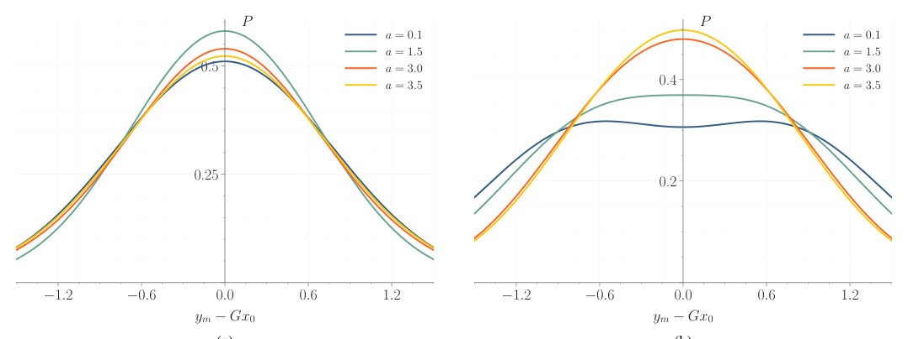
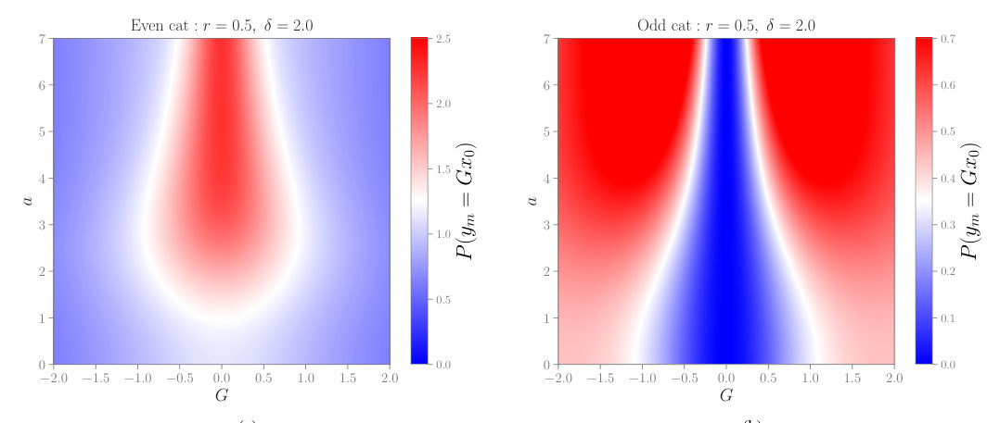
Summary. This paper details an iterative, measurement-assisted protocol for generating and amplifying squeezed Schrödinger cat states in continuous-variable quantum optics. By analyzing the joint probability density of sequential homodyne measurements, the authors derive closed-form expressions for the total success probability and the resulting mixed-state fidelity. This work establishes a scalable theoretical framework for utilizing non-Gaussian resources in quantum information processing.
Why it may be interesting. This work provides rigorous theoretical tools for engineering non-Gaussian quantum states using continuous-variable entanglement and measurement, directly impacting the feasibility of measurement-based quantum computation.
Main problem. The paper addresses the challenge of generating and manipulating high-fidelity squeezed Schrödinger cat states (SCSs), which are crucial non-Gaussian resources for quantum computation and networking.
Main result. The authors propose a measurement-assisted gate and an iterative protocol that successfully generate and amplify SCSs, demonstrating a tunable trade-off between fidelity and success probability.
Method. The core method involves using a Quantum Nondemolition (QND) entangling operation ($\hat{C}_Z$) on an ancillary cat state and a target oscillator, followed by projective homodyne measurement and iterative post-selection.
Model / system. The system is modeled using continuous-variable quantum optics, involving two-component photonic SCSs. The process is analyzed via wave function evolution, Wigner function representations, and calculating joint probability densities for sequential measurements.
Key observables. Fidelity ($F$), success probability ($P^{(k)}(d)$), quadrature squeezing factor ($\gamma^{-1}$), and the effective cat-state size ($|G|^k a$).
Important parameters / regimes. Coupling strength ($G$), squeezing levels ($\delta$), cat-state size parameter ($a$), and the measurement acceptance window width ($d$).
Assumptions / limitations. The analysis relies on the assumption of linearity in the density matrix for the sequential operations and often assumes the measurement outcome is accepted within a finite window $d$.
Figures summary. Figures illustrate Wigner functions showing input/output states for different squeezing regimes, and phase diagrams showing the total success probability $P^{(k)}(d)$ dependence on the measurement window $d$ and coupling strength $G$ for $k=1, 2, 3$ iterations.
Paper structure. The paper develops the theory by first defining the measurement-assisted gate, then deriving the recursive structure for the wave function evolution across $k$ iterations, and finally calculating the total success probability and mixed-state fidelity using multi-dimensional integration techniques.
Squeezed optical Schrödinger cat states constitute a key resource for both fundamental tests of quantum theory and up-to-date quantum technologies. We propose a measurement-assisted gate for the generation and manipulation of the cat states. In this scheme, an ancilla in the non-Gaussian small-amplitude (in general, squeezed) Schrödinger cat state and the target oscillator initially prepared in a squeezed vacuum (or coherent) state are subjected to a quantum nondemolition (QND) entangling operation followed by projective homodyne measurement. The proposed gate enables generation of high-fidelity squeezed Schrödinger cat states with controllable size and squeezing with tunable fidelity/success-probability trade-off. We also introduce an iterative, homodyne-conditioned $C_Z$-based protocol for cat-state amplification. The parameter regimes required to achieve the desired fidelity and the success probability are analyzed. The approach is well suited for applications in measurement-based quantum computing and hybrid quantum networks where non-Gaussian resources enhance computational and communication capabilities.
Authors: Chia-Tung Chu, Su-un Lee, Han Zheng, Senrui Chen, Bibek Pokharel, Alireza Seif, Liang Jiang
Type: experiment · Category: quantum information and computing · PDF: https://arxiv.org/pdf/2606.00433v1
Analysis basis: full PDF text, analyzed in chunks
Topic relevance: 🔥 QC/QI experiment 4/5 · 🔥 quantum measurements 4/5 · measurement-induced transitions 2/5 · methods for driven-dissipative 1/5
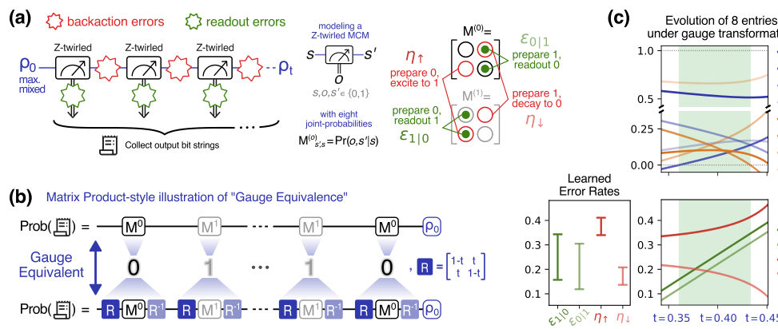
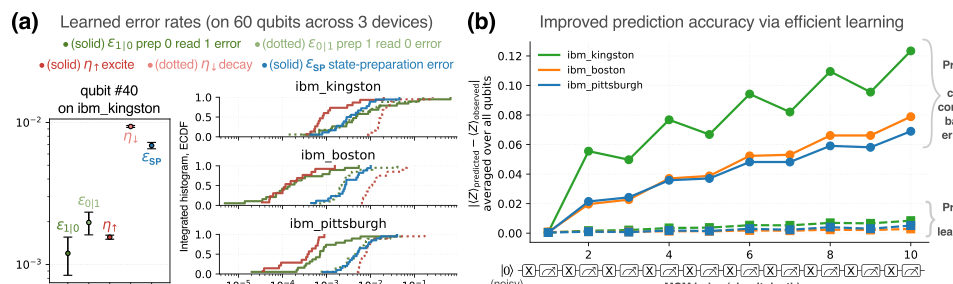
Summary. This paper introduces a novel, efficient protocol to characterize the complex noise associated with mid-circuit measurements in superconducting qubits. By analyzing readout bit strings from just three repetitions, the authors learn the full instrument, capturing crucial state-update backaction effects. This advanced characterization significantly outperforms standard error models, providing a vital tool for optimizing quantum error correction and state preparation.
Why it may be interesting. The rigorous characterization of non-unitary, state-altering processes like MCMs is crucial for advancing quantum error correction and fault-tolerant quantum computing architectures.
Main problem. Accurately characterizing Mid-circuit Measurements (MCMs) is difficult because they introduce both classical readout outcomes and quantum state backaction, which conventional methods fail to capture.
Main result. The proposed protocol successfully learns the full MCM instrument from only three repeated measurements, significantly improving Pauli-observable prediction compared to simple confusion-matrix models.
Method. The authors develop a self-consistent protocol using a second-order recurrence relation derived from the Cayley–Hamilton identity to estimate the joint conditional distribution of outcomes and post-measurement states.
Model / system. The work is implemented on superconducting qubits (IBM processors) and models the MCM process using a pair of $2 imes 2$ matrices, $\{M(0), M(1)\}$, which capture readout-backaction correlations.
Key observables. Readout error rates ($\epsilon_{1|0}, \epsilon_{0|1}$), backaction error rates ($\eta_{\uparrow}, \eta_{\downarrow}$), and the depth-resolved Pauli-Z observable deviation ($\Delta_{ ext{full}}(\ell)$).
Important parameters / regimes. The number of repeated measurements (three are sufficient), the initial state (maximally mixed state), and the gauge degree of freedom.
Assumptions / limitations. The noise model is assumed to be stationary, Markovian, and leakage-free; the analysis also deals with an unidentifiable gauge degree of freedom.
Figures summary. Figures compare the Pauli-Z observable prediction from the full learned instrument (dashed line) against a simpler confusion-matrix model (solid line), demonstrating the predictive advantage of including backaction.
Paper structure. The paper progresses from defining the physical problem (MCM backaction) to developing the mathematical framework (joint conditional distributions, recurrence relations), presenting the learning protocol (using three measurements), and finally validating the results by comparing predictions against longer, independent measurement chains.
Accurate modeling of mid-circuit measurements (MCMs) is essential for dynamic-circuit operations such as syndrome extraction, measurement-based reset, and the separation of state-preparation and measurement (SPAM) error. Unlike terminal measurement, a noisy MCM both produces a classical outcome and alters the incoming quantum state, thereby influencing subsequent circuit operations. This makes conventional confusion-matrix or fidelity-level characterization insufficient. Here we introduce an efficient, self-consistent protocol for learning a single-qubit Z-twirled MCM instrument, retaining the readout-backaction correlations and excitation-decay asymmetry that are erased in Pauli-error descriptions. Remarkably, readout bit strings from only three repeated MCMs on a maximally mixed input determine all learnable parameters of the reduced instrument, up to a single unidentifiable gauge degree of freedom. Physicality constraints convert this non-identifiability into narrow, gauge-aware error intervals. Implemented on IBM superconducting processors, the learned instrument improves Pauli-observable prediction by ${\sim}100\times$ over a conventional confusion-matrix model and reveals a $T_1$-decay dominated backaction. Our protocol provides a compact characterization layer for SPAM error separation, reset optimization, and noise-aware quantum error correction.
Authors: Jonas Junker, Donghwa Lee, Reda Louahaj, Oscar Cordero, Romain Brunel, Jens A. H. Nielsen, Ulrik L. Andersen, Jonas S. Neergaard-Nielsen
Type: experiment · Category: quantum information and computing · PDF: https://arxiv.org/pdf/2606.00216v1
Analysis basis: full PDF text, analyzed in chunks
Topic relevance: 🔥 quantum optics experiment 4/5 · interference shaping light 3/5 · QC/QI experiment 1/5 · correlated cavity matter 1/5 · driven-dissipative phase transition 1/5
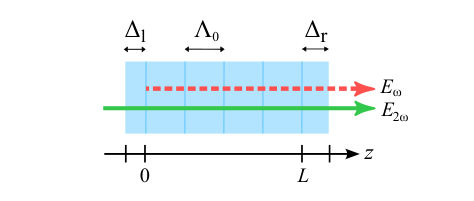
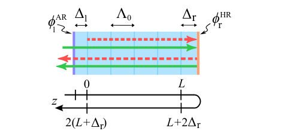
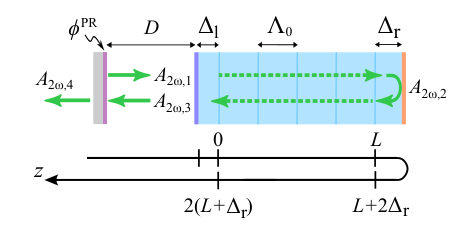
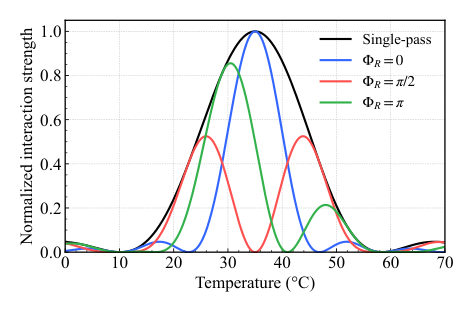
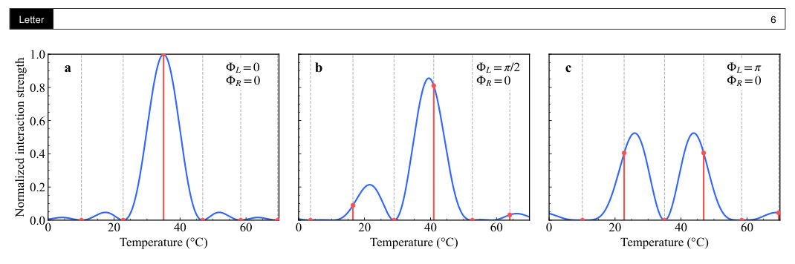
Summary. This research demonstrates that the performance of linear OPOs is critically dependent on phase factors originating from crystal edges and optical coatings, not just bulk material properties. By combining SHG and OPO threshold measurements, the authors quantify these phase-sensitive effects. The findings establish a necessary 'phase-aware framework' for designing scalable, low-threshold quantum light sources.
Why it may be interesting. This work provides crucial design guidelines for building robust quantum light sources, showing that simple bulk phase matching is insufficient; phase control at the boundaries is paramount for reproducible quantum technology.
Main problem. The performance of linear Optical Parametric Oscillators (OPOs) is highly sensitive to microscopic phase factors arising from crystal-edge termination and coating phases, causing nominally identical devices to behave differently.
Main result. Phase-sensitive cavity dynamics dictate the achievable nonlinear gain, leading to threshold variations up to nearly six-fold between similar devices.
Method. The study combines double-pass Second-Harmonic Generation (SHG) measurements to extract phase contributions with OPO threshold measurements to characterize the nonlinear gain.
Model / system. The system involves compact, doubly resonant standing-wave OPOs in periodically poled crystals, where the effective nonlinear gain is governed by the coherent superposition of forward- and backward-generated fields.
Key observables. OPO oscillation threshold power ($P_{ ext{thr}}$), normalized nonlinear interaction strength ($\eta_{nl}$), and extracted phase contributions ($\Phi_L, \Phi_R$).
Important parameters / regimes. Crystal-edge termination lengths ($\Delta l, \Delta r$), cavity resonance condition, and the relative round-trip phase ($\Phi_{rt}$).
Assumptions / limitations. The analysis assumes plane-wave propagation and focuses on the first-order quasi-phase-matched contribution.
Figures summary. Figures illustrate single-pass vs. double-pass nonlinear interactions, the dependence of nonlinear strength on relative phases, and experimental setups for both SHG and OPO measurements.
Paper structure. The paper progresses from modeling single-pass SHG, to incorporating double-pass interference effects, and finally applying this phase-aware framework to analyze and compare the threshold measurements of three distinct, yet nominally similar, OPO systems.
Efficient and reproducible squeezed-light sources are essential for quantum information processing and precision metrology. Compact linear standing-wave optical parametric oscillators (OPOs) are attractive because they combine low optical loss, low pump-power requirements, and large longitudinal mode spacing. In doubly resonant cavities, however, the nonlinear interaction is not determined solely by bulk phase matching: forward- and backward-generated fields recombine coherently, making the effective gain sensitive to crystal-edge termination, wavelength-dependent coating phases, and the cavity resonance condition. Here, we show that these microscopic phase contributions can produce large threshold variations between nominally similar OPOs. We combine double-pass second-harmonic generation with OPO threshold measurements to extract the relevant crystal-cavity phases and analyse three linear OPO systems. The observed devices exhibit threshold variations of up to nearly six-fold, traced to the phase-dependent nonlinear-gain envelope at accessible doubly resonant operating points. Our results establish a phase-aware framework for compact linear OPOs and provide design guidelines for reproducible low-threshold squeezed-light sources in scalable photonic quantum systems.
Authors: Ebrahim Khaleghian, Özgür E. Müstecaplıoğlu
Type: both · Category: quantum information and computing · PDF: https://arxiv.org/pdf/2606.00353v1
Analysis basis: full PDF text, analyzed in chunks
Topic relevance: 🔥 QC/QI experiment 4/5 · methods for driven-dissipative 3/5 · quantum measurements 2/5 · correlated / nonlocal dissipation 1/5
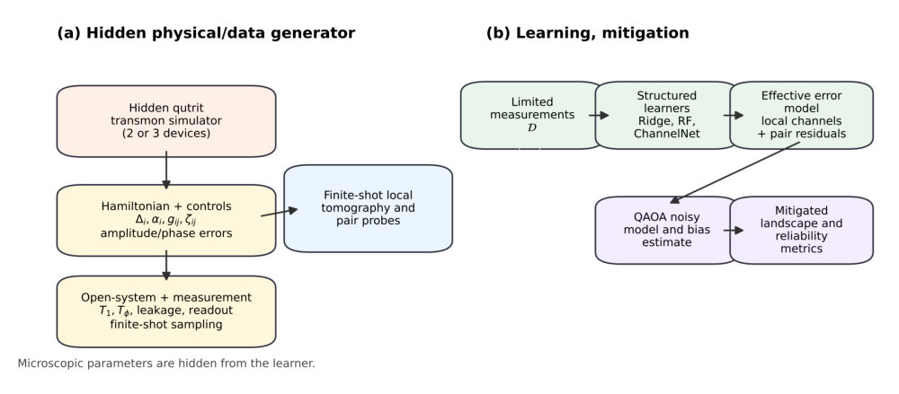
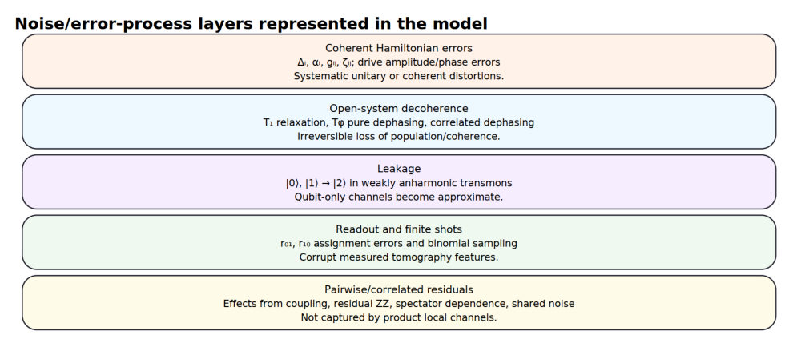
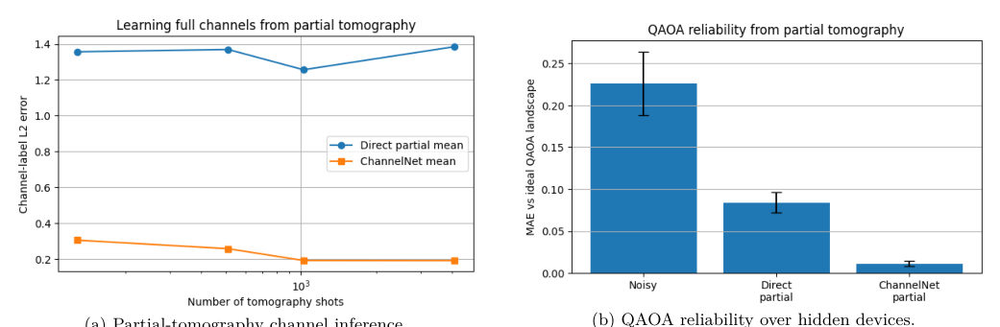
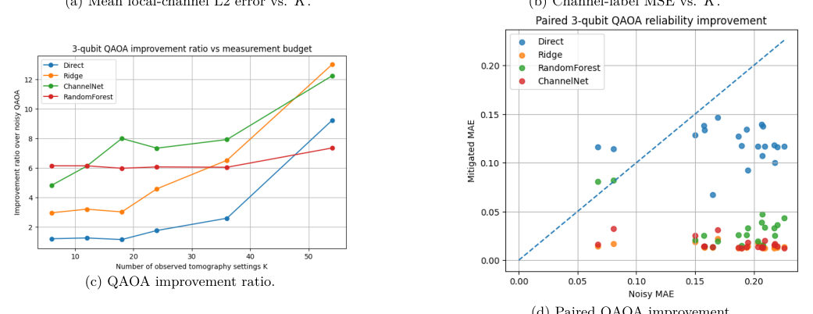
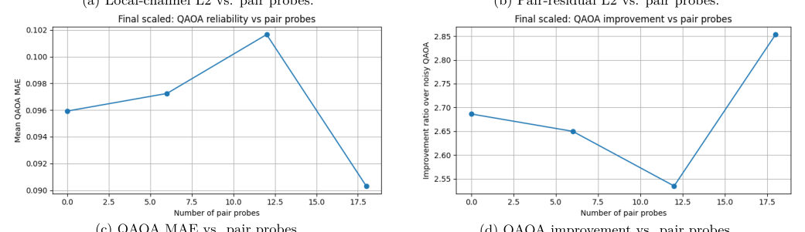
Summary. This work develops a physics-informed machine learning pipeline to estimate complex quantum error channels using only limited, noisy measurement data from transmon qubits. By learning these effective error processes, the authors successfully mitigate noise effects, leading to a significant and measurable improvement in the reliability of the Quantum Approximate Optimization Algorithm (QAOA) for MaxCut.
Why it may be interesting. It provides a concrete, data-driven methodology for mitigating hardware noise in near-term quantum computation, which is crucial for applying variational algorithms to real quantum hardware.
Main problem. The paper addresses the challenge of learning effective quantum error processes from limited, noisy measurements to enhance the reliability of variational quantum algorithms like QAOA.
Main result. The proposed physics-informed learning pipeline significantly improves QAOA reliability, showing improvements up to 20.4x in a two-qubit proof-of-concept and substantial reductions in Mean Absolute Error in a three-qubit study.
Method. A physics-informed pipeline uses neural networks and regression techniques to infer compact effective error channels (local Bloch channels and pairwise residuals) from sparse local and pair-probe tomography data.
Model / system. The system is modeled using superconducting transmon qubits, treated as imperfect qutrits, whose evolution is governed by a Lindblad master equation incorporating leakage and readout errors.
Key observables. QAOA cost landscape (Mean Absolute Error, RMSE), local/pair-wise Pauli expectation values, and inferred effective error channel parameters.
Important parameters / regimes. Qubit number (2-qubit, 3-qubit), measurement budget (K local measurements), and the depth of the QAOA circuit (p=1).
Assumptions / limitations. The learned error model is an operational representation, not a full microscopic Hamiltonian recovery; the learning process is separated from the physical simulator.
Figures summary. Figures illustrate the architecture (Simulator -> Learner -> Mitigation), diagnostics for two- and three-qubit partial tomography, and the resulting QAOA performance metrics under various stress tests.
Paper structure. The paper progresses from a two-qubit proof-of-concept to a more complex, hardware-aware three-qubit extension, detailing the measurement protocols, the structured learning models (Ridge, NN), and the final evaluation via QAOA landscape correction.
We present a physics-informed pipeline for learning effective quantum error processes from finite-shot measurements generated by hidden transmon-like simulators. Each physical transmon is modeled as an imperfect qutrit, while the learner only receives limited tomography data rather than microscopic Hamiltonian parameters. The learned representations are compact effective models: local affine Bloch channels for each qubit and, in the three-qubit extension, pairwise residuals that capture correlated errors. The learned error models are evaluated operationally by their ability to mitigate the cost landscape of the Quantum Approximate Optimization Algorithm (QAOA) for MaxCut. A two-qubit proof of concept shows that a neural-network approach can infer a full 24-parameter effective channel from only 12 local tomography values and improve QAOA landscape reliability by about $20.4\times$. A scaled three-qubit study shows that local structured learning still strongly improves QAOA reliability: at $K=18$ local measurements, Ridge regression and the neural-network approach reduce QAOA mean absolute error from about $0.1775$ to $0.0269$ and $0.0306$, respectively. Pair probes substantially improve correlated-error identifiability, reducing pair-residual L2 error from about $1.731$ to $1.122$. These results support effective error-process learning as a hardware-aware route toward more reliable variational quantum algorithms.
Authors: Muhammad Arsalan Ali Akbar, Mohsin Raza, Sabre Kais
Type: theory · Category: other · PDF: https://arxiv.org/pdf/2606.00877v1
Analysis basis: full PDF text, analyzed in chunks
Topic relevance: 🔥 analog quantum simulation 4/5 · exotic spin models in light-matter 3/5 · Keldysh / 2PI / non-Gaussian methods 1/5 · entanglement & information structure 1/5 · methods for driven-dissipative 1/5
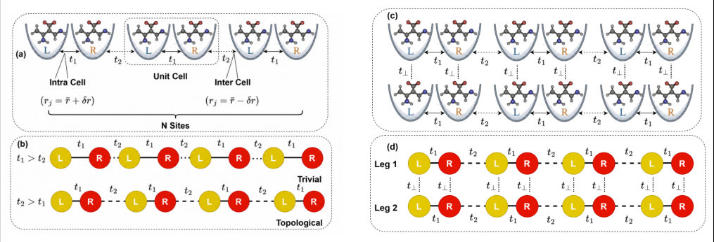
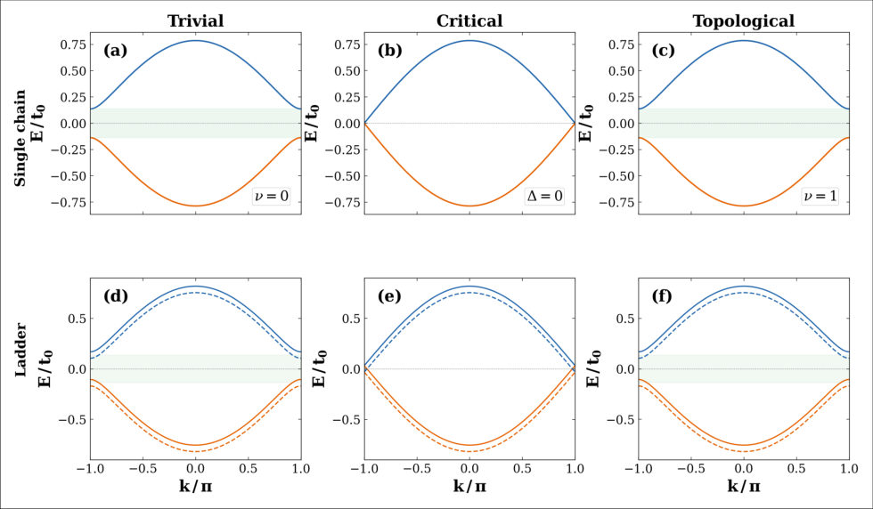
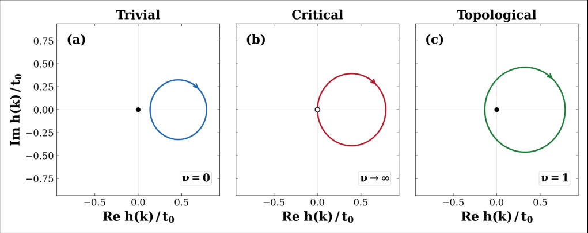
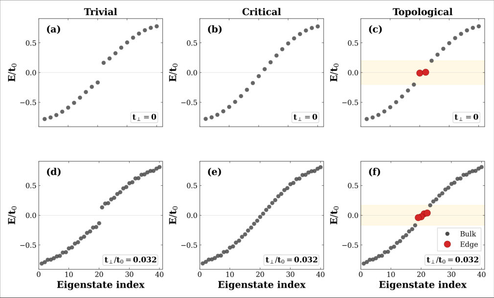
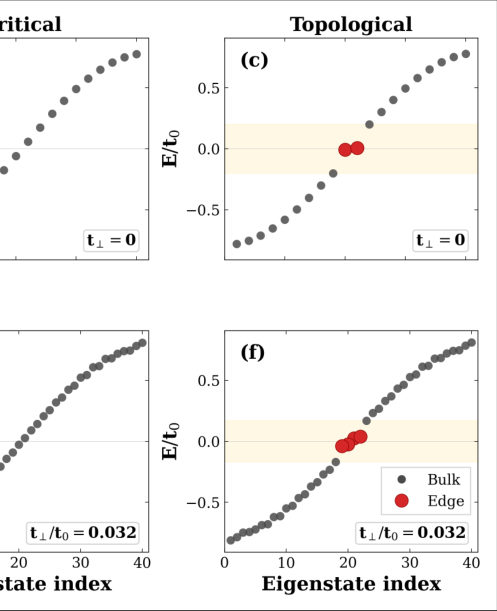
Summary. This paper develops a theoretical framework to study topological edge states in arrays of chiral dipolar molecules. By incorporating molecular handedness into a dimerized SSH model, the authors show that the edge states are uniquely labeled by the chirality of the boundary molecules. The framework is extended to a two-leg ladder, confirming the robustness of the topology and the chirality-addressability of the resulting edge modes.
Why it may be interesting. This work directly bridges molecular chirality (a concept from AMO/molecular physics) with topological quantum matter, providing a highly controllable, addressable platform for realizing exotic quantum states.
Main problem. The paper establishes a general theoretical framework for realizing and characterizing topological edge states in dimerized arrays of chiral dipolar molecules.
Main result. The key finding is that the edge states carry opposite molecular chirality at the left and right boundaries, a stereochemical labeling unique to this system, and the ladder extension doubles the topological index.
Method. The analysis employs self-consistent mean-field theory, mapping the interacting spin model to a fermionic SSH-type Hamiltonian, and utilizing winding number calculations for topological classification.
Model / system. The system is a dimerized array of Stark-dressed chiral dipolar molecules, modeled by an effective pseudo-spin-1/2 Hamiltonian. The analysis extends from a single chain to a two-leg ladder structure, incorporating chirality via the Dzyaloshinskii–Moriya interaction.
Key observables. Topological invariant (winding number $ u$), bulk energy spectra, boundary-localized probability densities, and the chirality label of the edge modes.
Important parameters / regimes. Dimerization strength ($t_1, t_2$), interchain coupling ($t_{\perp}$), and the strength of the chirality-induced DM interaction ($D_j$).
Assumptions / limitations. The analysis relies on a mean-field (Hartree-Fock) approximation to treat the interacting spin model, and the stability of edge modes requires specific coupling conditions.
Figures summary. Figures illustrate the physical platform (chiral chain), the effective SSH model, the bulk spectra across trivial/critical/topological regimes for both single chains and ladders, and the complex-plane winding trajectories.
Paper structure. The paper progresses by first deriving the single-chain model and its topological properties, then extending the analysis to the two-leg ladder geometry, and finally detailing the spectral analysis and the role of chirality in defining the edge states.
We establish a general theoretical framework for realizing topological edge states in dimerized arrays of chiral dipolar molecules and demonstrate that molecular handedness provides a natural and tunable route to SSH-like topology in an interacting one-dimensional setting. Starting from an effective spin-$\tfrac{1}{2}$ model generated by Stark-dressed chiral molecules, we introduce bond dimerization and show that the chirality-induced Dzyaloshinskii--Moriya interaction amplifies the effective hopping amplitudes and enlarges the bulk topological gap relative to an achiral chain of equivalent dipole strength. Using self-consistent mean-field theory with periodic- and open-boundary calculations, we map out the trivial, critical, and topological regimes through bulk spectra, complex-plane winding, and boundary-localized probability densities. A central result is that the two in-gap boundary modes carry \emph{opposite molecular chirality}: the left edge state localizes on a left-handed molecule and the right edge state on a right-handed molecule, a stereochemical labeling with no analogue in conventional SSH implementations. The two-leg ladder extension supports a richer four-band bulk structure and a rung-split edge sector whose robustness is characterized by a continuous sweep of the interchain coupling. All results are expressed in dimensionless units of the reference hopping scale $t_0$, making the framework directly applicable to any dipolar molecular platform -- from bialkali polar molecules at MHz coupling scales to future arrays of ultracold chiral polyatomic species. These findings establish dimerized chiral molecular arrays as a controllable and chirality-addressable platform for quasi-one-dimensional topological quantum matter.
Authors: Jia-Yi Fan, Kai-Yu Yuan, Zong-Yuan Ge, Feng-Hua Ren, Zhao-Ming Wang
Type: both · Category: quantum information and computing · PDF: https://arxiv.org/pdf/2606.01226v1
Analysis basis: full PDF text, analyzed in chunks
Topic relevance: 🔥 QC/QI experiment 4/5 · methods for driven-dissipative 2/5 · correlated / nonlocal dissipation 1/5 · driven-dissipative phase transition 1/5 · non-equilibrium dynamics 1/5
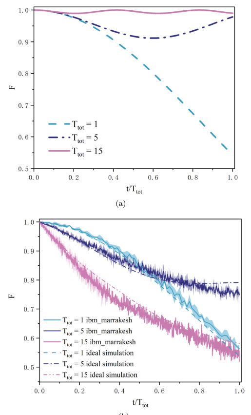
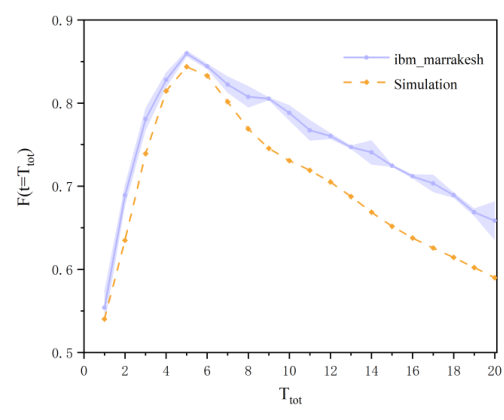
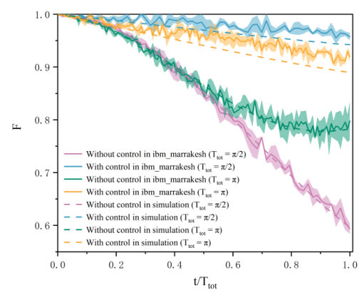
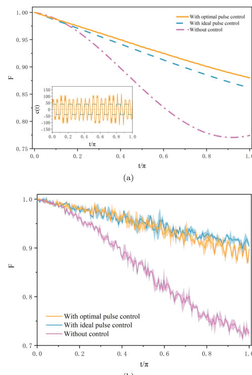
Summary. This paper demonstrates the feasibility of achieving adiabatic speedup on superconducting quantum processors by employing Leakage Elimination Operator (LEO) control. The authors show that LEO pulses significantly boost fidelity compared to uncontrolled evolution, allowing for faster computation times while mitigating noise effects. The methodology combines theoretical control design with practical optimization techniques like Bayesian optimization, validating the approach on real quantum hardware.
Why it may be interesting. This work directly addresses the critical challenge of noise-aware quantum control, providing a concrete, hardware-validated technique (LEO) to accelerate quantum computations beyond the limits imposed by environmental decoherence.
Main problem. The inherent trade-off between achieving adiabatic evolution (requiring infinitely long times) and mitigating environmental noise accumulation on quantum processors.
Main result. The work validates that Leakage Elimination Operator (LEO) control can significantly enhance adiabatic fidelity, enabling speedup on superconducting quantum processors, although hardware optimization showed limitations.
Method. The authors characterized the noise-adiabaticity trade-off by implementing LEO pulses, refining them via Bayesian optimization, and testing the protocol on both simulation and physical superconducting hardware.
Model / system. The study uses superconducting quantum processors (IBM platform) to model adiabatic evolution governed by a time-dependent Hamiltonian $H(t) = H_0(t) + H_{LEO}(t)$. The dynamics are treated as an open quantum system incorporating thermal relaxation, dephasing, and depolarizing noise.
Key observables. Adiabatic fidelity ($F$), which is tracked as a function of total evolution time ($T_{tot}$) and rescaled time ($t/T_{tot}$).
Important parameters / regimes. Noise parameters ($T_1, T_2$), total evolution time ($T_{tot}$), and the number of Fourier harmonics ($K=10$) used for pulse optimization.
Assumptions / limitations. The ideal LEO pulses are derived for closed systems, and the noise model used is a calibrated phenomenological approximation of the actual hardware noise.
Figures summary. Figures illustrate the fidelity trade-off vs. time for different control methods (no control vs. LEO control) on the ibm marrakesh processor, showing fidelity peaks at an optimal, finite $T_{tot}$.
Paper structure. The paper first establishes the noise-adiabaticity trade-off, then introduces and implements the LEO control, followed by optimizing the control pulse using Bayesian optimization, and finally validating the speedup on superconducting hardware.
The slow evolution required for adiabaticity in adiabatic quantum computation renders the system vulnerable to environmental noise. Leakage elimination operator (LEO) control provides an effective strategy to realize adiabatic speedup over a short timescale, thus mitigating the noise impact. Despite extensive theoretical investigations, the realization of LEO-based adiabatic speedup on realistic superconducting quantum processors remains absent. In this work, we present such a realization on IBM superconducting quantum processors. We first characterize the trade-off between adiabaticity and noise accumulation by varying the total evolution time on both the Qiskit simulator and the ibm_marrakesh processor, employing a comprehensive noise model that closely reproduces the experimental results. We then implement ideal LEO pulse derived for a closed system and achieve a significant enhancement of adiabatic fidelity within a short evolution time. To further improve the adiabatic fidelity, we refine the ideal LEO pulse via Bayesian optimization based on the comprehensive noise model. The optimized pulse yields a modest fidelity gain in simulation, yet on hardware it falls short of the ideal pulse under the present experimental conditions. Our work validates the feasibility of LEO-based adiabatic speedup on a superconducting quantum processor and highlights the potential of LEO for noise-aware adiabatic dynamics.
Authors: Ruibin Xu, Haohao Ren, Adriane Clerc, Guilhem Mollon, Wenbo Sheng, Feng Zhou, B. N. J. Persson
Type: both · Category: statistical mechanics · PDF: https://arxiv.org/pdf/2606.00626v1
Analysis basis: full PDF text, analyzed in chunks
Topic relevance: 🔥 non-equilibrium universality 4/5 · non-equilibrium dynamics 3/5 · Frenkel-Kontorova 1/5 · driven-dissipative phase transition 1/5
Summary. This work investigates how surface roughness evolves during sliding contact, finding that the process exhibits universal self-similar scaling at small scales due to junction dynamics. This roughening is counteracted by a material-specific smoothing mechanism (like plastic deformation), leading to a characteristic roll-off in the surface's power spectrum. The findings establish a quantitative, two-process model for wear and friction.
Why it may be interesting. The concept of universal scaling laws emerging from microscopic, non-equilibrium processes (like junction dynamics) that are then arrested by macroscopic material failure mechanisms is relevant to non-equilibrium statistical physics and pattern formation.
Main problem. The paper addresses the fundamental physical rule governing the final, steady-state roughness of surfaces after sliding contact (run-in), a process critical for understanding friction and wear.
Main result. The roughness exhibits universal self-affine scaling ($H \approx 1$) at short wavelengths, driven by junction formation/rupture, while a material-dependent roll-off at long wavelengths is set by competing smoothing mechanisms like plastic deformation or fracture.
Method. The study combines experimental measurements of surface topography (PSD analysis) with theoretical modeling based on a junction-transfer process.
Model / system. The system is a sliding contact between various materials (metals, rocks, glasses). The model posits that roughness evolves via a competition between a universal roughening process (junction dynamics) and a material-specific smoothing process (plasticity/fracture).
Key observables. Self-affine roughness characterized by the Hurst exponent ($H$), and the power spectral density (PSD) showing distinct short-wavelength ($H=1$) and long-wavelength (material-dependent roll-off) regimes.
Important parameters / regimes. The competition between junction formation/rupture (roughening) and plastic deformation/fracture (smoothing) defines the characteristic roll-off wavenumber ($q_r$).
Assumptions / limitations. The roughening mechanism is modeled by the random addition/removal of 'blocks' at microscopic junctions, and the steady state requires an additional smoothing mechanism beyond the junction dynamics to explain the finite roll-off.
Figures summary. Figures illustrate the emergence of universal self-affine topography, showing PSDs collapsing onto an $H=1$ regime at short scales, while also demonstrating the suppression of this scaling under boundary lubrication.
Paper structure. The paper establishes the physical problem, presents experimental evidence showing universal short-scale scaling, develops a two-process model explaining the competition between junction-driven roughening and material-limited smoothing, and validates this model using simulations.
Surface roughness evolves during sliding, a process known as run-in, and the resulting topography controls friction, leakage, and failure from machines to geological faults. Yet the physical rule selecting this state remains unclear. We show that metals, rocks, and glasses develop universal self-similar roughness at short wavelengths, while retaining a material-dependent roll-off. A two-process model explains this behavior: junction formation and rupture drive universal roughening, whereas larger-scale deformation and/or fracture limit its growth.
Authors: Christopher Mastandrea, Chih-Chun Chien
Type: theory · Category: other · PDF: https://arxiv.org/pdf/2606.02505v1
Analysis basis: full PDF text, analyzed in chunks
Topic relevance: 🔥 entanglement & information structure 4/5 · analog quantum simulation 3/5 · non-equilibrium dynamics 2/5
Summary. This paper analyzes the spatial and particle-particle entanglement in 1D quantum walks of two bosonic particles, comparing results for distinguishable and indistinguishable cases. Using various entanglement measures, the authors show that entanglement dynamics are highly sensitive to the onsite repulsion strength ($U/J$) and the initial state preparation. The findings highlight the general applicability of certain entanglement measures across particle statistics.
Why it may be interesting. This work provides a detailed quantitative comparison of entanglement dynamics in bosonic quantum walks, offering insights into how particle indistinguishability affects entanglement measures, which is crucial for understanding quantum simulation fidelity in many-body systems.
Main problem. The paper investigates the spatial and particle-particle entanglement dynamics in one-dimensional quantum walks involving two bosonic particles.
Main result. The entanglement measures exhibit non-monotonic behavior as the onsite repulsion ($U/J$) increases, and the left-right entanglement measure proves robustly applicable to both distinguishable and indistinguishable particle cases.
Method. The study employs exact time evolution calculations using the time-evolution operator and calculates entanglement using measures derived from the entropy of coarse-grained states and singular value decompositions (SVD) of the Fock state coefficients.
Model / system. The system models two bosonic particles undergoing continuous-time quantum walks on a 1D lattice, governed by a Hamiltonian related to the Bose-Hubbard model. The analysis compares results for distinguishable and indistinguishable particles.
Key observables. Left-right entanglement entropy ($E_{SLR}$), particle-particle entanglement (based on SVD of Fock state coefficients), and time-evolved occupation numbers $\langle n(x) angle$.
Important parameters / regimes. Onsite repulsion ratio ($U/J$), initial state type (separable, entangled, doubly occupied), and lattice size ($L=70$).
Assumptions / limitations. The analysis focuses on two-particle systems to manage computational complexity, and the left-right entanglement measure is shown to be a generalizable tool for both particle types.
Figures summary. Figures illustrate the time evolution of entanglement measures (Left-right and $\uparrow, \downarrow$) for various initial states and varying $U/J$ ratios for both distinguishable and indistinguishable particles, alongside plots of occupation number dynamics.
Paper structure. The paper systematically introduces the physical model and Hamiltonian, defines multiple entanglement measures for both particle types, and then analyzes the time evolution and dependence of these measures on initial conditions and the onsite repulsion strength ($U/J$).
We present entanglement measures between spatially separated regions and between two distinguishable or indistinguishable particles in one-dimensional two-particle continuous-time quantum walks governed by the Hubbard Hamiltonian. The left-right entanglement checks the entropy of coarse-grained states counting the numbers of particles on the left and right halves of the lattice while the particle-particle entanglement is based on the entropy of the singular values of the time-evolved Fock state. With separable, entangled, and doubly occupied initial states, we examine initial entanglement and the following growth in different entanglement measures. While the entanglement measures of the indistinguishable cases resemble those of the distinguishable cases when the initial states are comparable, the long-time limits of the entanglement measures are typically non-monotonic as the onsite repulsion increases. We also discuss possible implications for future research of entanglement in multi-particle quantum dynamics.
Authors: Mehdi Ashrafganjoie, Kelvin Dsouza, Prithu Bhatnagar, Khalid Hossain, Mangal Dhoubhadel, Preston Webster, Simone Assali, Patrick Daoust, Oussama Moutanabbir, Shui-Qing Yu, Daryoosh Vashaee, Demitry Farfurnik
Type: experiment · Category: quantum information and computing · PDF: https://arxiv.org/pdf/2606.01524v1
Analysis basis: full PDF text, analyzed in chunks
Topic relevance: 🔥 QC/QI experiment 4/5 · spintronics-quantum-optics interface 3/5 · exotic spin models in light-matter 1/5
Summary. This work characterizes the magneto-optical properties of GeSn/SiGeSn quantum well heterostructures using advanced PL spectroscopy. By measuring shifts in photon energy under applied magnetic fields, the authors confirmed key parameters like the effective g-factor and excitonic mass. This research validates the material platform for developing scalable hole spin qubits for quantum information processing.
Why it may be interesting. The direct measurement of the effective g-factor and confirmation of spin-orbit coupling in a solid-state semiconductor platform directly addresses the requirements for realizing controllable spin qubits.
Main problem. The study aims to characterize the magneto-optical properties of GeSn and GeSn/SiGeSn heterostructures to advance their use as platforms for hole spin qubits.
Main result. The measurements successfully confirmed theoretically expected magneto-optical effects, including diamagnetic shifts, Landau quantization, and Zeeman splitting, yielding an effective g-factor of ~2.
Method. Magneto-photoluminescence (PL) spectroscopy was performed using double modulation Fourier transform infrared-based techniques on double quantum well heterostructures.
Model / system. The physical system is a GeSn/SiGeSn double quantum well heterostructure, which utilizes the direct bandgap potential of GeSn to host hole spin qubits for quantum information processing.
Key observables. PL intensity, photon energy dependence on temperature and magnetic field, diamagnetic shift, Landau quantization, and Zeeman splitting.
Important parameters / regimes. Effective g-factor (~2), excitonic reduced mass (~0.04 me), and exciton binding energy (calculated).
Assumptions / limitations. The analysis assumes that the observed Zeeman splitting confirms strong spin-orbit interaction, enabling electrically driven spin control.
Figures summary. Figures illustrate temperature-dependent PL spectra, plots showing PL intensity and photon energy vs. temperature, and polarization-angle resolved PL spectra fitted to oscillatory functions under applied magnetic fields.
Paper structure. The paper follows a structure of initial characterization (temperature/power dependence) leading to detailed magneto-optical measurements (low and high magnetic fields) to extract fundamental parameters like the g-factor and exciton mass.
Hole spin qubits in germanium (Ge)-based heterostructures have demonstrated their potential for scalable quantum information processing using all-electrical gate operations. Furthermore, the emerging material platform of germanium-tin (GeSn) can feature a direct bandgap, which makes it promising for establishing spin-photon interfaces for quantum networking. Here, we perform magneto-photoluminescence measurements of a Ge0.88Sn0.12/Si0.02Ge0.89Sn0.09 double quantum well using the double modulation Fourier transform infrared-based photoluminescence spectroscopy. Our measurements reveal theoretically expected diamagnetic shift at low magnetic fields as well as the linear trend of zeroth-level Landau quantization at higher fields and Zeeman-induced polarization-dependent energy shifts at +/- 12 T. We extract an effective g-factor of ~ 2 and an excitonic reduced mass of ~ 0.04 me consistent with previous estimations for heavy-hole Γ-valley excitons. The observation of sizable Zeeman splitting is consistent with strong spin-orbit interaction in Ge-based hole systems, which can enable electrically driven spin control. Our analysis can be adopted for studying and evaluating group-IV semiconductor heterostructures as hosts for hole spin qubits toward scalable quantum information processing.
Authors: Shien Wan, Zecheng Li, Bo Song
Type: theory · Category: other · PDF: https://arxiv.org/pdf/2606.02489v1
Analysis basis: full PDF text, analyzed in chunks
Topic relevance: 🔥 analog quantum simulation 4/5 · non-equilibrium dynamics 3/5 · methods for driven-dissipative 1/5
Summary. This paper details a method to engineer and measure large Chern numbers in optical Floquet quasicrystals using cold atoms. By analyzing the quasienergy spectrum and performing Thouless pumping measurements, the authors demonstrate that the transport properties are directly governed by the system's topological invariants. This opens new avenues for realizing and studying complex topological phases in controllable quantum simulators.
Why it may be interesting. This work directly bridges the concepts of topological invariants (Chern numbers) with controllable quantum simulation platforms (cold atoms in optical lattices) using time-periodic driving, which is a major focus in modern AMO physics.
Main problem. The primary goal is to achieve and experimentally probe the realization of large Chern numbers in topological systems using optical Floquet quasicrystals.
Main result. The study proposes a scheme where Thouless pumping can directly measure these large Chern numbers, revealing a strong connection between transport features and the quasienergy spectrum.
Method. The analysis employs the gap labeling theorem to characterize Chern numbers and uses Thouless pumping measurements to probe the topological properties of the system.
Model / system. The system is an optical Floquet quasicrystal realized with cold atoms, modeled by a generalized Aubry-Andr´e-Harper (GAAH) Hamiltonian subjected to time-periodic driving.
Key observables. Chern numbers ($C_i$), Thouless pumping current/velocity, quasienergy spectrum, and the Inverse Participation Ratio (IPR).
Important parameters / regimes. The analysis explores different Floquet driving regimes, including off-resonant, resonant, and semi-adiabatic regimes, controlled by modulation frequency ($\omega$) and amplitude ($\gamma$).
Assumptions / limitations. The analysis relies on the high-frequency approximation for the effective Hamiltonian in the off-resonant regime, and approximations like the tight-binding limit.
Figures summary. Figures illustrate Thouless pumping dynamics, the quasienergy spectrum in different regimes (off-resonant vs. resonant), and the dependence of pumping velocities and IPR on modulation parameters.
Paper structure. The paper builds from establishing the model (GAAH Hamiltonian) to analyzing the quasienergy spectrum using gap labeling, then connecting this to transport properties via Thouless pumping measurements across various driving regimes.
Chern numbers are central to correlated and topological phenomena, yet most topological systems are associated with Chern numbers of order unity. Here we propose a scheme to achieve large Chern numbers in an optical Floquet quasicrystal with cold atoms, which can be directly measured via Thouless pumping. We study the quasienergy spectrum of Floquet quasicrystals and characterize the emergent Chern numbers using gap labeling theorem. We further investigate the Thouless pumping in the Floquet quasicrystal at different driving frequencies and amplitudes, revealing the connection between transport features and the quasienergy spectrum. Our findings open new avenues for exploring rich topological dynamics in Floquet quasicrystals and realizing fractional Chern insulating states.
Authors: Herve Zwirn
Type: theory · Category: other · PDF: https://arxiv.org/pdf/2606.01349v1
Analysis basis: full PDF text, analyzed in chunks
Topic relevance: 🔥 quantum measurements 4/5 · measurement-induced transitions 3/5
Summary. This paper tackles the measurement problem by arguing that the conflict between unitary evolution and collapse postulates stems from assuming absolute, observer-independent reality. It proposes Convivial Solipsism, a formal framework asserting that physical events are relative to the observer's perspective. This shifts the foundation of scientific objectivity from shared facts to the internal coherence of individual perspectives.
Why it may be interesting. This is highly relevant as it tackles the foundational interpretation of quantum mechanics, which underpins all applications in AMO and quantum information theory by defining what 'measurement' and 'reality' mean in practice.
Main problem. The paper addresses the fundamental conceptual tension in quantum mechanics arising from the measurement problem, specifically the conflict between unitary evolution and the projection postulate.
Main result. The authors propose Convivial Solipsism (ConSol) as a framework that preserves quantum universality by asserting that events are not absolute facts, but rather coherent structures within individual perspectives.
Method. The analysis employs conceptual structure analysis, comparative taxonomy of quantum interpretations (e.g., QBism, RQM), and the development of a formal logic to model perspectival statements.
Model / system. The discussion centers on abstract quantum systems (qubits, general quantum states) and the conceptual framework of observation, using thought experiments like Wigner's friend to test assumptions.
Key observables. The state vector ($\psi$), the outcome of measurements (Type-1 elements $ ext{PO}_{ij}$), and the consistency of personal experience.
Important parameters / regimes. The distinction between absolute facts and perspectival descriptions; the structural requirements for intersubjectivity.
Assumptions / limitations. The core assumption is that scientific objectivity relies on the internal coherence of perspectival structures rather than observer-independent facts.
Figures summary. The notes mention a comparative table (Table 1) summarizing how various interpretations address foundational questions regarding reality and state vector status.
Paper structure. The paper progresses by first detailing the measurement problem contradiction, then comparing major interpretations via a taxonomy, and finally developing a formal logic (syntax and axioms) for Convivial Solipsism to formalize the non-absoluteness of events.
Extended Wigner-type experiments reveal a fundamental tension between the universality of quantum mechanics, the absoluteness of observed events, and the structure of physical reality. While recent no-go theorems suggest that these assumptions cannot be jointly maintained, their interpretation remains unclear. In particular, the claim that events are not absolute is often left at the level of an interpretive slogan, without a precise conceptual formulation. In this paper, we analyse the conceptual structure underlying these results and show that the non-absoluteness of events requires a precise formulation in order to avoid ambiguity. We argue that many existing approaches fail to provide such a formulation, either by implicitly reintroducing observer-independent structure or by leaving key notions underdetermined. Within this framework, Convivial Solipsism offers a coherent and fully articulated account of non-absolute events, preserving the universality of quantum mechanics while avoiding the need for a global viewpoint. We show in particular that this approach resolves the apparent conflict between perspectival outcomes and scientific intersubjectivity. These results suggest that scientific objectivity does not rely on observer-independent facts, but on the internal coherence of perspectival structures.
Authors: Hyeongjin Kim, Revathi Jambunathan, Jan Balewski, Daan Camps
Type: both · Category: quantum information and computing · PDF: https://arxiv.org/pdf/2606.00368v1
Analysis basis: full PDF text, analyzed in chunks
Topic relevance: 🔥 QC/QI experiment 4/5 · non-equilibrium dynamics 1/5
Summary. This paper presents an end-to-end quantum circuit implementation for solving linear PDEs, including advection, wave, and Poisson equations. By comparing Small-Angle Approximation (SAA) against Quantum Signal Processing (QSP), the authors demonstrate that QSP offers superior accuracy for simulating these dynamics on NISQ hardware. The methodology is successfully generalized to handle complex non-homogeneous boundary conditions derived from plasma physics simulations.
Why it may be interesting. This work provides concrete, implementable quantum circuits for simulating fundamental physical dynamics (PDEs), directly bridging theoretical quantum algorithms with measurable results on near-term quantum hardware.
Main problem. Developing and benchmarking end-to-end quantum algorithms for solving linear Partial Differential Equations (PDEs) like advection, wave, and Poisson equations.
Main result. The Quantum Signal Processing (QSP) augmented algorithm was experimentally shown to provide more accurate solutions than the Small-Angle Approximation (SAA) method under realistic NISQ hardware constraints.
Method. The approach involves transforming PDEs into the frequency domain using the Quantum Fourier Transform (QFT) and then implementing the time evolution operator using either SAA or the more robust QSP polynomial approximation.
Model / system. The study focuses on three linear PDEs: advection, wave, and Poisson equations. The implementation is benchmarked on numerical simulations and actual IBMQ quantum hardware, utilizing techniques like odd extension for boundary conditions.
Key observables. The state $|\psi(x, t) angle$ at time $t$, the difference ($\Delta$) between quantum and classical solutions, and the Root Mean Squared Error (RMSE).
Important parameters / regimes. Time ($t$), system size ($N$), and the truncation degree ($d$) used in the QSP approximation.
Assumptions / limitations. The SAA method suffers from uncontrollable approximation error, while the QSP method requires post-selection for the Poisson solver, leading to very low success probabilities on current hardware.
Figures summary. Figures compare classical, SAA, and QSP quantum simulations for the advection equation, showing QSP's superior convergence. Other figures illustrate the circuit construction and the application to the Poisson equation with plasma source terms.
Paper structure. The paper introduces the quantum simulation workflow (QFT $ ightarrow$ Solve in Frequency Space $ ightarrow$ Inverse QFT). It details the comparison between SAA and QSP for the advection equation, then extends the methodology to solve the Poisson equation with non-homogeneous Dirichlet boundary conditions, culminating in hardware benchmarking.
Quantum algorithms offer new avenues for solving partial differential equations (PDEs). While the potential for end-to-end quantum advantage is at present not well understood, recent literature presents explicit circuit constructions for solving certain classes of linear PDEs in the frequency domain and thus offers concrete examples to study. In this work, we develop end-to-end implementations of these quantum circuits compiled to machine-level instructions and benchmark them in both numerical simulations and IBMQ hardware experiments. We focus on the advection, wave, and Poisson equations and study quantum circuits that propagate the dynamics in frequency space via the quantum Fourier transform using approximate methods based on a first-order approximation which offer compact representations with uncontrollable approximation error, and polynomial approximation methods based on quantum signal processing (QSP) leading to deeper circuits with tunable algorithmic error. In addition, we experimentally demonstrate that the QSP-augmented algorithm can provide accurate solutions under realistic hardware constraints. Finally, we extend our method to address non-homogeneous Dirichlet boundary conditions and verify it numerically for a Poisson equation with source term obtained from high-fidelity physics simulations of a capacitively coupled plasma.
Authors: Gaurav A. Tathed, Nicholas C. F. Zutt, Collin J. C. Epstein, Crystal Senko
Type: experiment · Category: quantum information and computing · PDF: https://arxiv.org/pdf/2606.00358v1
Analysis basis: full PDF text, analyzed in chunks
Topic relevance: 🔥 QC/QI experiment 4/5 · quantum measurements 1/5
Summary. This paper presents a novel, software-only technique to compensate for systematic errors induced by the AC mains power line in trapped-ion quantum computing. By precisely measuring the line-synchronous detuning and phase accumulation, the authors update control pulses to cancel these deterministic errors. This results in substantial improvements in gate fidelity and the successful execution of complex qudit algorithms.
Why it may be interesting. This work provides a crucial, non-hardware-intensive method for error mitigation in trapped-ion quantum computing, directly addressing a major source of systematic noise that limits scalability.
Main problem. AC mains power line-synchronous disturbances introduce coherent, time-dependent errors (detuning and phase) into precision quantum control experiments, degrading gate fidelity.
Main result. A software-based compensation protocol successfully mitigates these errors, recovering high gate fidelities (99.93%) and significantly boosting the success probability for qudit algorithms (e.g., 10% to 70%).
Method. The authors measure the line-synchronous error components (detuning and phase) in a line-triggered frame and update the control pulse sequences accordingly to cancel the deterministic error contribution.
Model / system. The experiment uses a trapped $^{137} ext{Ba}^+$ ion as a quantum system, controlling transitions in both qubit and multilevel qudit regimes. The error is modeled as a time-dependent magnetic-field-induced shift in energy levels.
Key observables. Average gate fidelity ($F_{avg}$), success probability ($ ext{P}{ ext{succ}}$) for algorithms like Bernstein-Vazirani, residual detuning ($\delta\omega(t)$), and accumulated phase ($\Phi(t)$).
Important parameters / regimes. The compensation reduces the calibrated AC line contribution to detuning by factors up to $21(9) imes$, and the phase residual by $90 imes$.
Assumptions / limitations. The method assumes the noise perturbation is reproducible with respect to the mains electrical phase, allowing for deterministic calibration.
Figures summary. Figures illustrate the compensation protocol, showing the required detuning and phase corrections, and compare gate performance (e.g., Randomized Benchmarking decay or qudit success probability) with and without compensation enabled.
Paper structure. The paper first identifies the problem of line-synchronous noise, details the measurement of detuning and phase using line-triggered Ramsey sequences, develops the software compensation protocol for both detuning and phase, and finally validates the method by testing gate fidelity via RB and algorithmic performance on qudits.
AC mains power line-synchronous disturbances are a common source of coherent, time-dependent error in precision quantum-control experiments. We show that when these disturbances are reproducible with respect to the mains phase, their effect can be measured in a line-triggered frame and compensated through software updates to control sequences. In our system, the disturbances manifest as magnetic-field-induced shifts in the energy level structure of a trapped $^{137}\text{Ba}^+$ ion, resulting in time-dependent detunings between the ion transitions and a local oscillator, as well as additional phases accumulated on superpositions of energy levels. We demonstrate a compensation protocol that corrects for the instantaneous oscillator detuning during control pulses, and for the phase accumulated by the energy levels between pulses. The calibrated AC line contribution to the detuning is reduced by $21(9)\times$, while the fitted AC phase amplitude is reduced below the measurement uncertainty. We then study gate performance on a magnetic-field-sensitive qubit and find that uncompensated mains-synchronous errors produce time-dependent fluctuations that make the usual randomized-benchmarking decay model unreliable. With compensation enabled, these fluctuations are suppressed sufficiently to recover a standard benchmarking decay and extract an average gate fidelity of $99.93(1)\%$. Finally, we extend the framework to multilevel qudit control and apply it to a single-qudit Bernstein-Vazirani algorithm, where AC compensation increases the success probability on a 16-level qudit from $10(7)\%$ to $70(9)\%$. These results show that reproducible line-synchronous noise can be treated as a calibrated control-frame error and corrected without additional hardware.
← Index · ← Previous · Next →